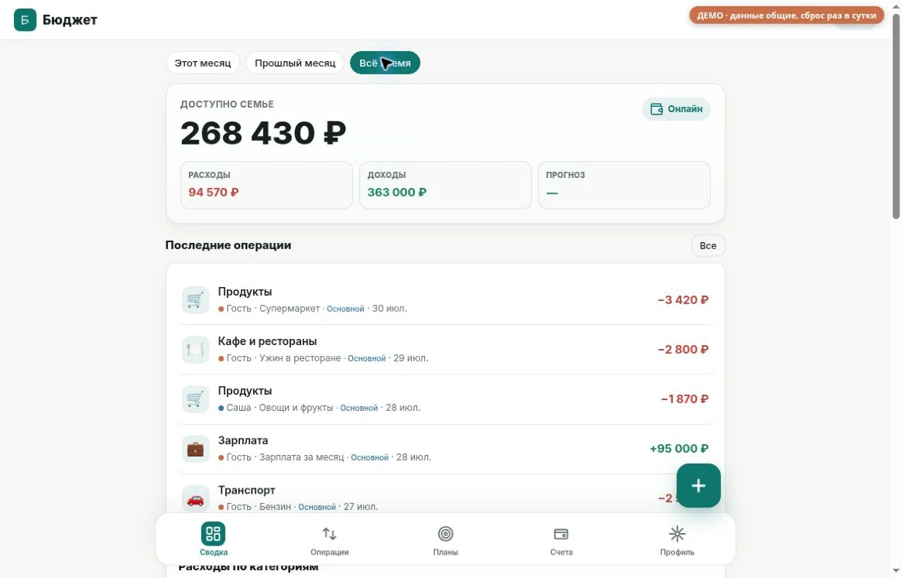
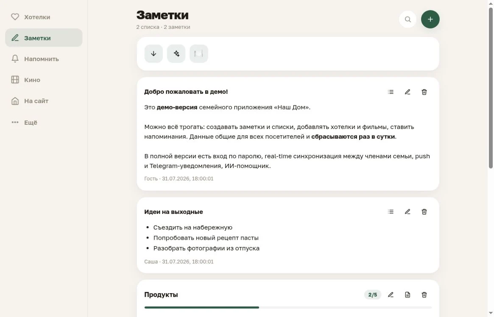
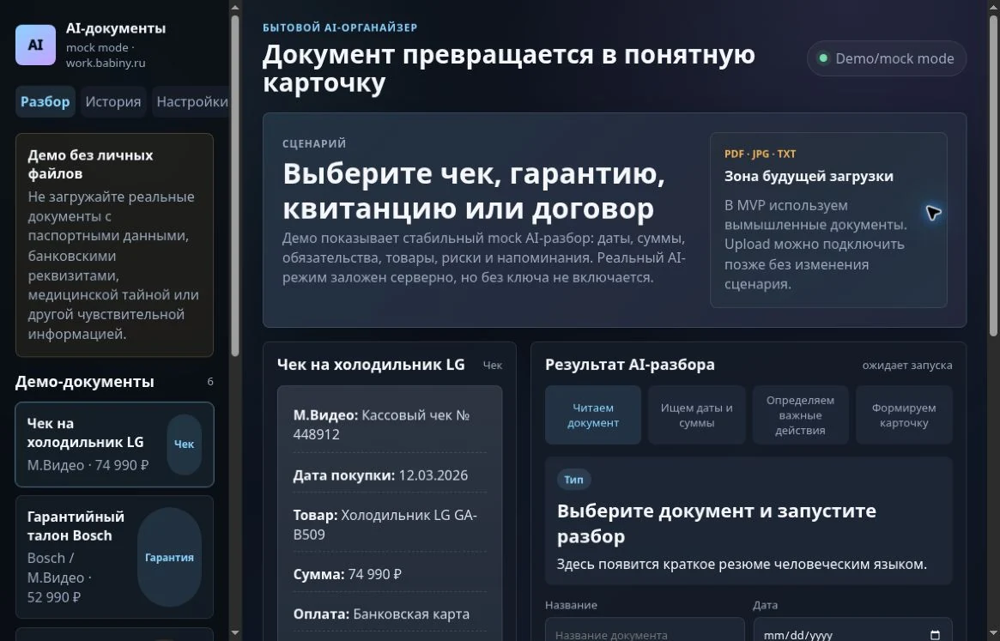

01 / НАШ БЮДЖЕТ

ВЕБ-ПРИЛОЖЕНИЕ
Наш
Бюджет
Повседневные финансы в одном месте: операции, лимиты, планы и аналитика.
Открыть демо в новой вкладкеПривет, я Никита
Простые элементы.
Новые сочетания.
01 / Избранные проекты
Приложения для повседневных задач.
В открытых демо можно всё рассмотреть
на тестовых данных.

ВЕБ-ПРИЛОЖЕНИЕ
Повседневные финансы в одном месте: операции, лимиты, планы и аналитика.
Открыть демо в новой вкладкеПРИЛОЖЕНИЕ ДЛЯ ПОВСЕДНЕВНОГО
Заметки, списки и напоминания. Всё, что хочется держать под рукой, в одном интерфейсе.
Открыть демо в новой вкладке
ЭКСПЕРИМЕНТ / DEMO-MODE
Из документа в понятную карточку: суммы, даты и напоминания. Прототип сценария разбора на вымышленных примерах.
В демо работает mock-парсер.
Реальные документы загружать не нужно.

02 / За проектами
Меня зовут Никита. myLevi — моё пространство для личных проектов: домашних приложений, веб-интерфейсов и экспериментов с AI.
Здесь собраны вещи, которые можно открыть, рассмотреть и попробовать. А код и другие эксперименты — на GitHub.
03 / На связи
Для идей, вопросов
и просто хорошего разговора.